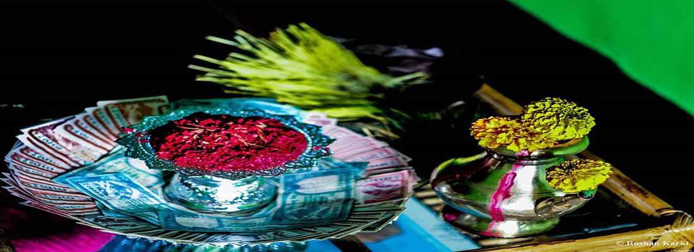

DASHAIN
This is the longest Hindu festival in Nepal, traditionally celebrated for two weeks with prayers and offerings to Durga, the Universal Mother Goddess. The great harvest festival of Nepal, Dashain is a time for family reunions, exchange of gifts and blessings, and elaborate pujas. Dashain honors the Goddess Durga, who was created out of the shakti or energy of all the gods, armed with weapons from each of them. Goddess Durga, symbolizing valor and prowess, is worshipped and offered sacrifices to ensure the devotees' progress and prosperity. During the first ten days, pilgrims flock to various river confluences early in the morning and sacred shrines in the evening. Ghatasthapana, Phool Pati, Mahaastami, Nawami and Vijaya Dashami are the series of the events under Dashain each marked with a different set of rituals. During Dashain, men and women in their fineries visit their elders to seek tika (a dab of red vermilion mixed with yogurt and rice) accompanied by blessings. Sword precessions (Paayaa) are also held in various part of the Kathmandu Valley. A large number of animals are officially sacrificed at Hanuman Dhoka during Nawami which is attended by officials, invitees and visitors. During the ninth day, the Taleju Temple which is normally out of bounds is also open to the public. The last day, known as Kojagrat Purnima, is the full moon. New clothes, home visits, grand feasts, kite flying and village swings are the highlights of Dashain. Around this time the population of Kathmandu is greatly reduced as many head home to various parts of the country. On the tenth day known as Tika, people are seen moving around with their foreheads covered with rice tika, wearing new clothes. There is much feasting as people visit relatives’ homes to receive tika and blessings.